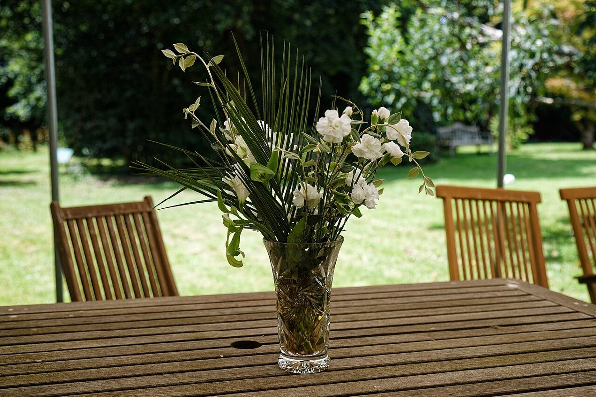
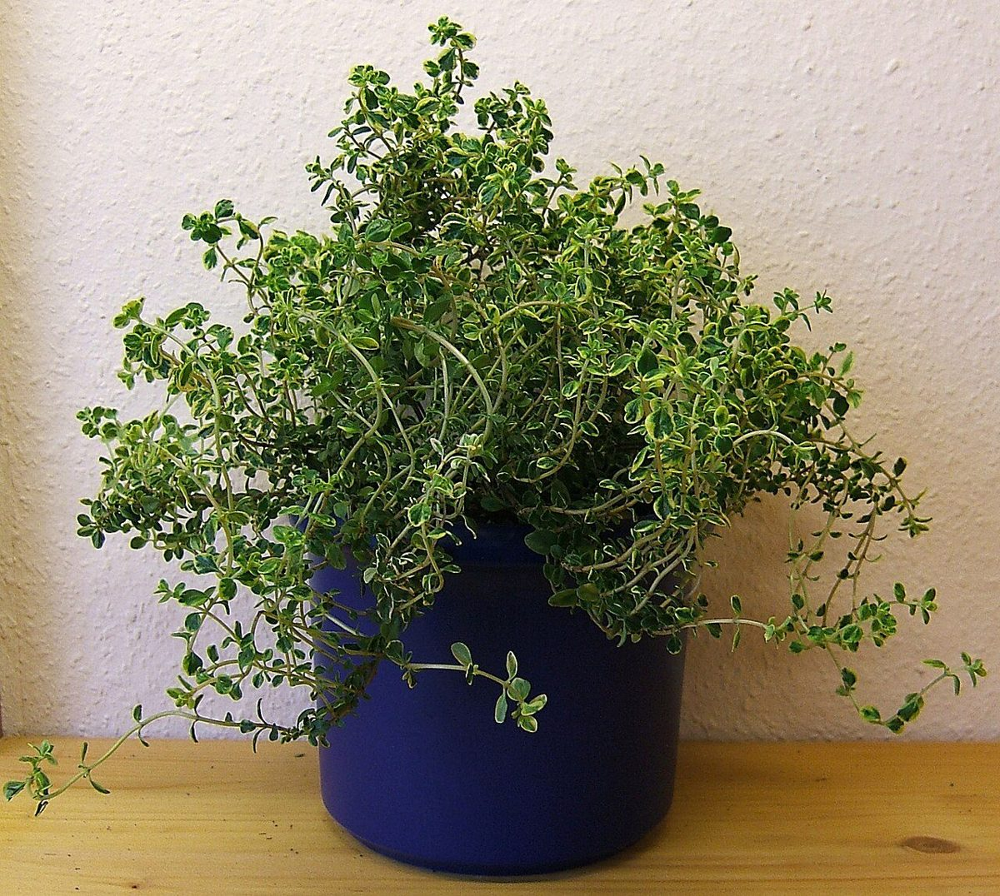
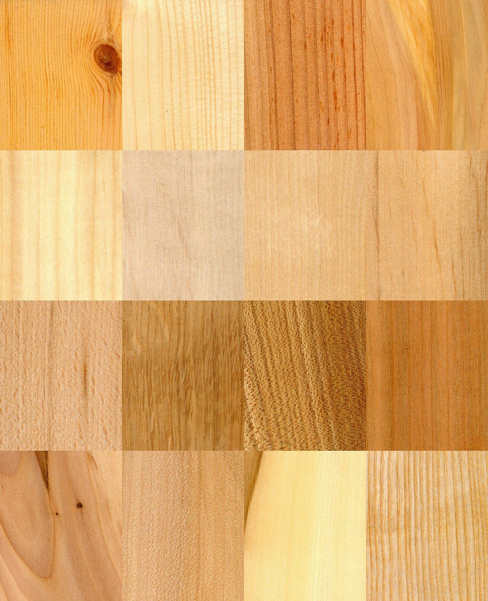
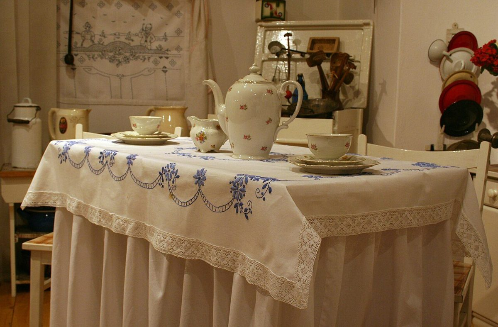

お知らせ
営業時間・定休日は準備中です(お問い合わせください)。



佐賀市八戸溝のお店です
Maison 5 メゾンサンクは、佐賀市八戸溝にあるお店です。営業時間やメニューなどの詳しい内容は、現在準備中です。ご不明な点は、お電話またはInstagramからお気軽にお問い合わせください。
Maison 5メゾンサンク
※このコピーは制作側の案です。お店の公式な言葉ではありません。
〒849-0935 佐賀県佐賀市八戸溝3丁目8-15

営業時間・定休日は準備中です(お問い合わせください)。



Maison 5 メゾンサンクは、佐賀市八戸溝にあるお店です。営業時間やメニューなどの詳しい内容は、現在準備中です。ご不明な点は、お電話またはInstagramからお気軽にお問い合わせください。